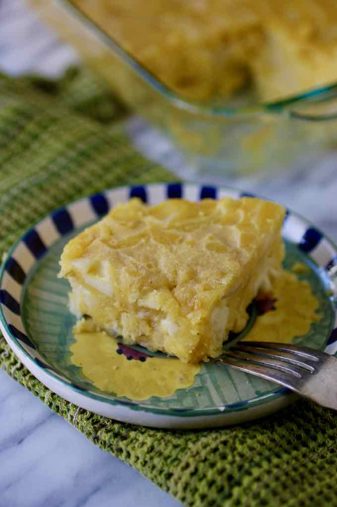

Sopa Paraguaya

Summary
Sopa paraguaya is a delicious traditional cheesy cornbread from Paraguay, which is prepared with corn flour, cheese, milk and onions. It is traditionally served with meats as well as soups.
History
When the Spaniards arrived to Guarani lands, the natives received them with honors and offered them their best food to entertain them: game meat. When the meat ran out, and as the guests were still hungry, the Guaranis served them the food they usually ate, which was made with corn flour (or cassava) wrapped in banana leaves, cooked on fire. As they served their food, they shouted “So’o opa”, which is Guarani for “the meat is finished”. The Spaniards understood “sopa” and the rest is history!
Description
- Preparation time: 10 mins
- Cook time: 40 mins
- Total time: 50 mins
Ingredients
- 2½ cups corn flour (extra fine cornmeal)
- 2 cups milk
- 4 onions
- 12 oz. queso paraguay (or 9 oz/300g mozzarella and 3 oz/100g grated parmesan)
- 4 eggs
- Salt
- Black pepper
- Vegetable oil
Equipment
Instructions
- Preheat oven to 350 °F / 180 °C
- Thinly slice the onion and fry them in a large skillet with a little oil until translucent for about 8 to 10 minutes.Season with salt and pepper.
- In a bowl, whisk the eggs until they become foamy.
- In a separate bowl, add the corn flour, then the onion and the milk, and mix.
- Add the eggs and the cheese cut into very small cubes or grated. Mix well.
- Grease a baking dish with oil and pour the mixture in it.
- Bake for 30 to 40 minutes or until the surface is golden brown. When you poke the sopa paraguaya with a toothpick, it should come out clean.
- Let cool and cut into individual squares.
Navigation: